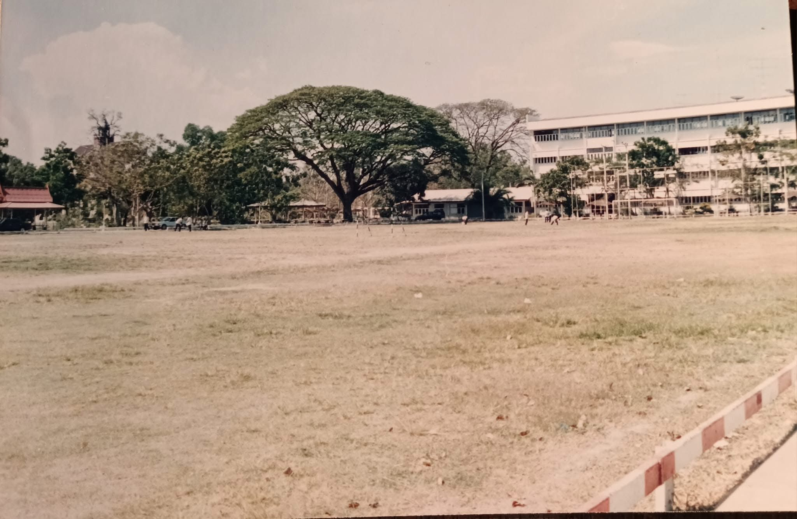
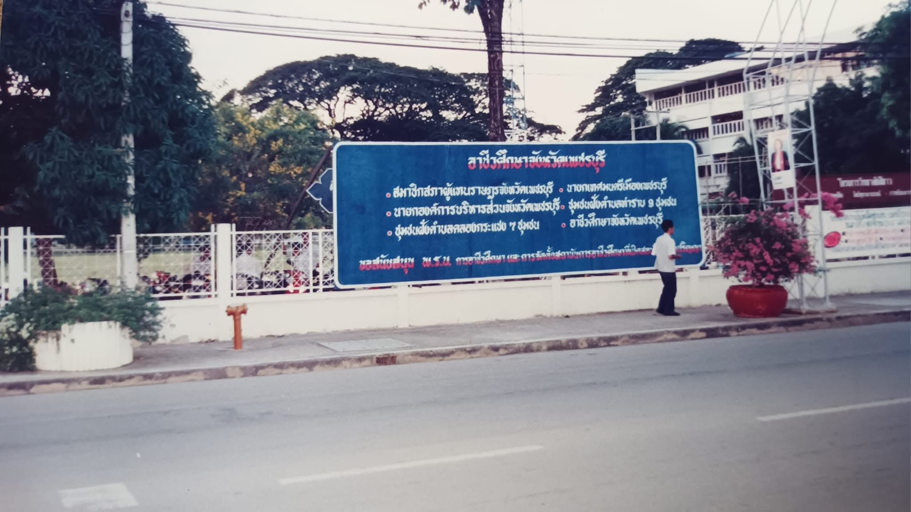
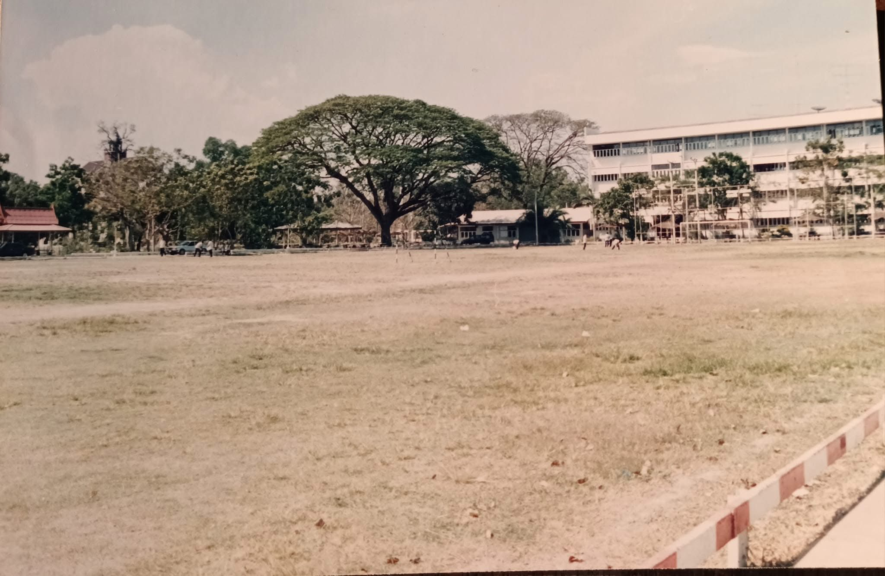
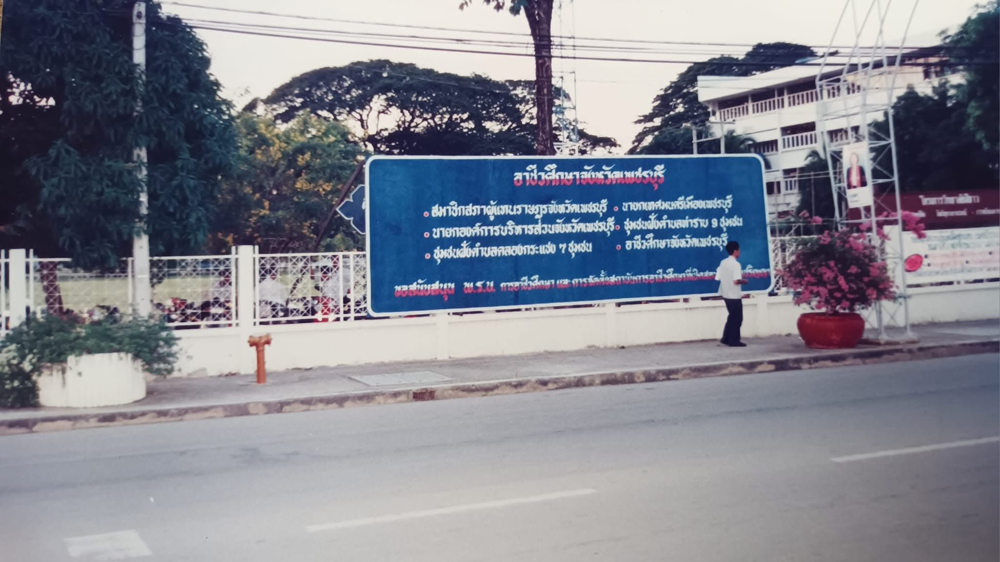

"พัฒนาวิชาชีพ ก้าวล้ำเทคโนโลยี สร้างสรรค์ปัญญา"
เป็นสถานศึกษาอาชีวศึกษาที่จัดการศึกษาระบบทวิภาคี เพื่อให้ผู้เรียนได้มีประสบการณ์ทำงานในสถานประกอบการจริง
ประวัติสถานศึกษา
พระครูพิศาลสมณกิจ เจ้าอาวาสวัดยาง อำเภอเมือง จังหวัดเพชรบุรี ได้เห็นความสำคัญของการศึกษา จึงได้จัดตั้งโรงเรียนและกำหนดชื่อให้เข้ากับยุคสมัยนั้นโดยใช้ชื่อ โรงเรียนช่างไม้วัดยาง เมื่อวันที่ 1 สิงหาคม พ.ศ. 2478 สังกัดอำเภอเมือง จังหวัดเพชรบุรี ( ต่อมาพระคุรเจ้าได้เลื่อนสมณศักดิ์เป็นพระเทพวงศาจารย์ อดีตเจ้าคณะจังหวัดเพชรบุรี) ครั้งถึงปี พ.ศ. 2480 หลังจากที่เปิดทำการสอนได้ประมาณ 2-3 ปี โรงเรียนช่างไม้วัดยาง ได้โอนไปขึ้นกับเทศบาลเมืองเพชรบุรี ในระยะเวลาต่อมาเมื่อมีคนสนใจมากขึ้น จึงทำให้บริเวณวัดยางคับแคบเกินไป ไม่สามารถที่จะขยายต่อไปได้อีกแล้ว พระครูพิศาลสมณกิจและครูสงวน มณีแสง ครูใหญ่คนแรกของโรงเรียนได้ดำเนินการย้ายกิจการทั้งหมดของโรงเรียนมาตั้งที่วัดเลาซึ่งเป็นวัดร้าง ตั้งอยู่ตรงข้ามพระราชวังรามราชนิเวศน์ทางฝั่งตะวันออกของแม่น้ำเพชรบุรี ที่ถนนบริพัตร อำเภอเมือง จังหวัดเพชรบุรี ซึ้งเป็นสถานที่ตั้งในปัจจุบันพร้อมกันนั้นได้เปลี่ยนชื่อเป็นโรงเรียนช่างไม้เพชรบุรี
 



ประวัติสถานศึกษาแต่ละ พ.ศ.
- พ.ศ. 2481 : โรงเรียนช่างไม้เพชรบุรีได้โอนไปสังกัดกรมอาชีวศึกษา กระทรวงศึกษาธิการ เมื่อวันที่ 1 กันยายน พ.ศ. 2481 รับผู้จบระดับประถมศึกษาปีที่ 4 เข้าเรียนต่อในระดับมัธยมศึกษาตอนต้นปีที่ 1-3 ตามหลักสูตรกรมอาชีวศึกษา ผู้สำเร็จการศึกษาจะได้รับประกาศนียบัตร มัธยมอาชีวศึกษาตอนต้น เทียบเท่ามัธยมศึกษาปีที่ 3
- พ.ศ. 2485 : โรงเรียนช่างตัดผมได้โอนแยกออกไปจากโรงเรียนช่างไม้เพชรบุรี
- พ.ศ. 2490 : เปิดการสอนระดับประถมการช่างปีที่ 4
- พ.ศ. 2499 : เปิดการสอนระดับอาชีวศึกษาชั้นสูง 1 ปี รับผู้จบ ม.3 (สายอาชีพ) แต่ไม่เป็นที่นิยมของนักเรียน
เปิดสอนระดับมัธยมศึกษาตอนต้น แผนกช่างปูน หลักสูตร 3 ปี รับผู้จบจากชั้นประถมปีที่ 4 - พ.ศ. 2500 : เปิดการสอนระดับอาชีวศึกษาชั้นสูงแผนกปลูกสร้าง หลักสูตร 3 ปี รับผู้จบชั้นมัธยมศึกษาปีที่ 6 สายอาชีพ และแผนกช่างก่อสร้าง รับผู้จบมัธยมศึกษาปีที่ 3 สายสามัญ
- พ.ศ. 2510 : เปิดสอนระดับอาชีวศึกษาชั้นสูงแผนกช่างยนต์ หลักสูตร 3 ปี รับผู้จบมัธยมศึกษาชั้นปีที่ 3 สายสามัญและสายอาชีพ
- พ.ศ. 2515 : เปิดสอนระดับอาชีวศึกษาชั้นสูงแผนกช่างเชื่อมและโลหะแผ่น หลักสูตร 3 ปี
- พ.ศ. 2517 : เปิดสอนระดับอาชีวศึกษาชั้นสูงแผนกช่างไฟฟ้ากำลัง หลักสูตร 3 ปี
- พ.ศ. 2519 : เปิดสอนระดับอาชีวศึกษาชั้นสูงแผนกช่างกลโรงงาน หลักสูตร 3 ปี และแผนกช่างวิทยุและโทรคมนาคม หลักสูตร 3 ปี
- พ.ศ. 2523 : กรมอาชีวศึกษาได้ยกฐานะโรงเรียนการช่างเพชรบุรี เป็นโรงเรียนเทคนิคเพชรบุรี
- พ.ศ. 2524 : กรมอาชีวศึกษาได้ยกฐานะโรงเรียนเทคนิคเพชรบุรี เป็นวิทยาลัยเทคนิคเพชรบุรี
- พ.ศ. 2525 : เปิดสอนระดับประกาศนียบัตรวิชาชีพเทคนิค (ปวท.) สาขาเทคนิควิศวกรรมไฟฟ้า หลักสูตร 2 ปี รับผู้จบการศึกษา มัธยมศึกษาปีที่ 6 สายสามัญและเทียบเท่า
- พ.ศ. 2527 : เปิดสอนระดับประกาศนียบัตรวิชาชีพชั้นสูง (ปวส.)
สาขาวิชาช่างไฟฟ้า
- สาขางานเครื่องกลไฟฟ้า
สาขาวิชาช่างอิเล็กทรอนิกส์
- สาขางานอิเล็กทรอนิกส์ทั่วไป - พ.ศ. 2534 : เปิดสอนระดับประกาศนียบัตรวิชาชีพชั้นสูง (ปวส.)
แผนกวิชาช่างก่อสร้าง
- สาขาช่างก่อสร้าง
สาขาวิชาช่างยนต์
- สาขาเทคนิคยานยนต์ - พ.ศ. 2536 : เปิดสอนระดับประกาศนียบัตรวิชาชีพชั้นสูง (ปวส.) ภาคค่ำ
สาขาวิชาช่างไฟฟ้า
- สาขางานติดตั้งและควบคุม - พ.ศ. 2537 : เปิดสอนระดับประกาศนียบัตรวิชาชีพชั้นสูง (ปวส.) ภาคค่ำ สาขาช่างยนต์
เปิดสอนระดับประกาศนียบัตรวิชาชีพชั้นสูง (ปวส.) สาขาวิชาช่างกลโรงงาน แผนกงานเทคนิคการผลิต สาขางานเครื่องกล - พ.ศ. 2538 : เปิดสอนระดับประกาศนียบัตรวิชาชีพชั้นสูง (ปวส.)
สาขาวิชาช่างเทคนิคโลหะ
- สาขางานวิศวกรรมงานเชื่อม
สาขาวิชาช่างไฟฟ้า
- สาขางานเครื่องเย็นและปรับอากาศ
สาขาวิชาช่างอิเล็กทรอนิกส์
- สาขางานอิเล็กทรอนิกส์ - พ.ศ. 2540 : เปิดสอนระดับประกาศนียบัตรวิชาชีพชั้นสูง (ปวส.) ระบบอาชีวศึกษาทวิภาคี
เปิดสอนระดับประกาศนียบัตรวิชาชีพชั้นสูง (ปวส.) สาขาวิชาเทคโนโลยีอุตสาหกรรม สาขาช่างซ่อมบำรุง - พ.ศ. 2545 : เปิดสอนระดับประกาศนียบัตรวิชาชีพชั้นสูง (ปวส.) รับจากผู้จบ ม.6
สาขาวิชาช่างเทคนิคการผลิต
- สาขางานเครื่องมือกล
สาขาวิชาช่างไฟฟ้า
- สาขางานเครื่องมือกลไฟฟ้า
สาขาวิชาช่างอิเล็กทรอนิกส์
- สาขางานเทคนิคคอมพิวเตอร์
สาขาวิชาช่างเทคนิคอุตสาหกรรม
- สาขางานติดตั้งและบำรุงรักษา - พ.ศ. 2546 : เปิดสอนระดับประกาศนียบัตรวิชาชีพชั้นสูง (ปวส.) รับจากผู้จบ ม.6
สาขาวิชาโยธา
สาขาวิชาเครื่องกล - พ.ศ. 2547 : เปิดสอนระดับประกาศนียบัตรวิชาชีพชั้นสูง (ปวส.) ระบบอาชีวศึกษาทวิภาคี รับจากผู้จบ ปวช.
สาขาวิชาเครื่องกล
- สาขางานเทคนิคยานยนต์ - พ.ศ. 2548 : เปิดสอนระดับประกาศนียบัตรวิชาชีพ (ปวช.)
สาขาวิชาพณิชยการ
- สาขางานคอมพิวเตอร์ธุรกิจ - พ.ศ. 2551 : เปิดสอนระดับประกาศนียบัตรวิชาชีพ (ปวช.)
สาขาวิชาการก่อสร้าง
- สาขางานโยธา - พ.ศ. 2553 : เปิดสอนระดับประกาศนียบัตรวิชาชีพชั้นสูง (ปวส.) รับจากผู้จบ ม.6
สาขาวิชาเทคนิคโลหะ
- สาขางานเทคนิคการเชื่อมโลหะ - พ.ศ. 2557 : เปิดสอนระดับปริญญาตรีสายเทคโนโลยีหรือสายปฏิบัติการ
- สาขางานเทคโนโลยีไฟฟ้า - พ.ศ. 2557 : เปิดสอนระดับปริญญาตรี
สายเทคโนโลยีหรือสายปฏิบัติการ
- สาขาเทคโนโลยีไฟฟ้า
- สาขาเทคโนโลยีอิเล็กทรอนิกส์
- สาขาเทคโนโลยียานยนต์ - พ.ศ. 2561 : เปิดสอนระดับประกาศนียบัตรวิชาชีพชั้นสูง (ปวส.) รับจากผู้จบ ม.6
สาขาวิชาช่างอิเล็กทรอนิกส์
- สาขางานเทคนิคคอมพิวเตอร์ - พ.ศ. 2563 : เปิดสอนระดับประกาศนียบัตรวิชาชีพ (ปวช.) สาขาวิชาแมคคาทรอนิกส์
- สาขางานแมคคาทรอนิกส์
การจัดการศึกษา
หลักสูตรประกาศนียบัตรวิชาชีพ พ.ศ. 2562
| สาขาวิชา | สาขางาน |
|---|---|
| ช่างยนต์ | ยานยนต์ (ปกติ) |
| ช่างกลโรงงาน | เครื่องมือกล (ปกติ) |
| ช่างซ่อมบำรุง | ซ่อมบำรุงอุตสาหกรรม (ปกติ) |
| ช่างเชื่อมโลหะ | ผลิตภัณฑ์ (ปกติ) |
| ช่างไฟฟ้ากำลัง | ไฟฟ้ากำลัง (ปกติ) |
| ช่างอิเล็กทรอนิกส์ | อิเล็กทรอนิกส์ (ปกติ) |
| ช่างก่อสร้าง | ก่อสร้าง (ปกติ) |
| ช่างเทคนิคคอมพิวเตอร์ | เทคนิคคอมพิวเตอร์ (ปกติ) |
| แมคคาทรอนิกส์และหุ่นยนต์ | แมคคาทรอนิกส์และหุ่นยนต์ (ปกติ) |
ประเภทวิชาพาณิชยกรรม
| สาขาวิชา | สาขางาน |
|---|---|
| คอมพิวเตอร์ธุรกิจ | คอมพิวเตอร์ธุรกิจ (ปกติ) |
หลักสูตรประกาศนียบัตรวิชาชีพชั้นสูง พ.ศ. 2563
ประเภทวิชาอุตสาหกรรม
| สาขาวิชา | สาขางาน |
|---|---|
| เทคนิคเครื่องกล | เทคนิคยานยนต์ (ทวิภาคี), เทคนิคยานยนต์ (ม.6) |
| เทคนิคการผลิต | เครื่องมือกล (ทวิภาคี), เครื่องมือกล (ม.6) |
| ไฟฟ้า | ไฟฟ้ากำลัง (ปกติ), ไฟฟ้ากำลัง (ม.6) |
| อิเล็กทรอนิกส์ | อิเล็กอุตสาหกรรม (ปกติ) |
| ช่างก่อสร้าง | ก่อสร้าง (ปกติ) |
| เทคโนโลยีคอมพิวเตอร์ | คอมพิวเตอร์ฮาร์ดแวร์ (ปกติ), คอมพิวเตอร์ฮาร์ดแวร์ (ม.6) |
| เทคนิคอุตสาหกรรม | เทคโนโลยีวิศวกรรมซ่อมบำรุงอุตสาหกรรม (ปกติ) |
ประเภทวิชาบริหารธุรกิจ
| สาขาวิชา | สาขางาน |
|---|---|
| เทคโนโลยีธุรกิจดิจิทัล | ธุรกิจดิจิทัล (ปกติ) |